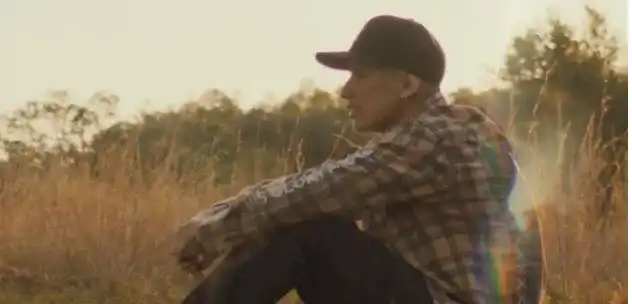
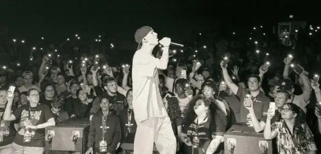

A dark time

« Feels like I spent my whole life, Tryna be someone who I'm not inside »
Growing up in church his whole life, Sam participated in worship songs from the time he was 15 years old, but for him it was never real worship. After a while, he hated singing in church and would do anything to avoid those moments.
Sam saw many miracles around him but had never experienced anything with God himself. So he began to question his faith, and then in high school he stopped believing in God and got into bad company.
« This pleasure is poison, I’m high then I’m falling, Everytime it leaves me low »
Sam then developed a depression and started using drugs to escape from reality. He felt like he had no purpose on this earth, but he also felt very ashamed of his behavior, even though he was a pastor's son. Then he started to have a new addiction: self-harm. But Sam didn't stop there, as he also attempted suicide twice.
« I was playing with fire, Said I’m fine but I lied »
When his mother and brother found out he was mutilating himself, they cried and were so upset, it was very hard for Sam to see them like that. Afterwards, he would lie to his family, telling them he was getting better.
La délivrance
« I gotta let go it’s causing pain inside, It’s all that I know, yeah, I’m losing my mind, I know that I’ll die if you’re not by my side »
One day, Sam was home alone, and as he was about to commit suicide with a razor blade, the dusty piano in his room caught his attention, as if something was shining on it, although it was dark.
So he automatically started playing and singing a Todd Dulaney’s song: Victory Belongs to Jesus. He had never worshipped like this before, and he felt an immense peace, an unconditional love that he had never felt before. He cried, and it was there that he was delivered from everything by Jesus: from depression, from drug addiction, from self-harm and from suicide.
Since that day, he has not stopped growing spiritually, and worship has become like an addiction for him, an escape moment where he can run every time, whether he is happy or sad. His life has been completely transformed, he has given his life fully to Christ.
A new life
Now 22 years old, Sam Rivera works with his passion. With music he can express his emotions, he writes songs about what he has been through and wants to motivate young people to get closer to Christ.
There are 27 scars on his arms that he made while mutilating himself. Sam covered them with tattoos with Bible verses, they are like reminders to never do it again.
Let Go is about letting go, about a man suffering from many vices who gave his life to God and was totally transformed by praising him.